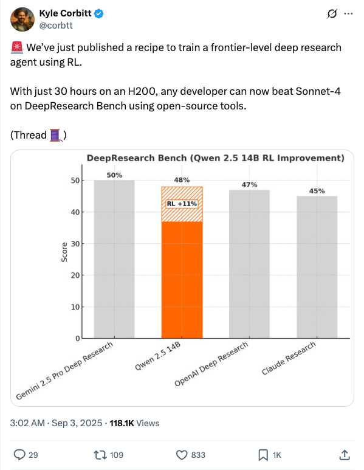
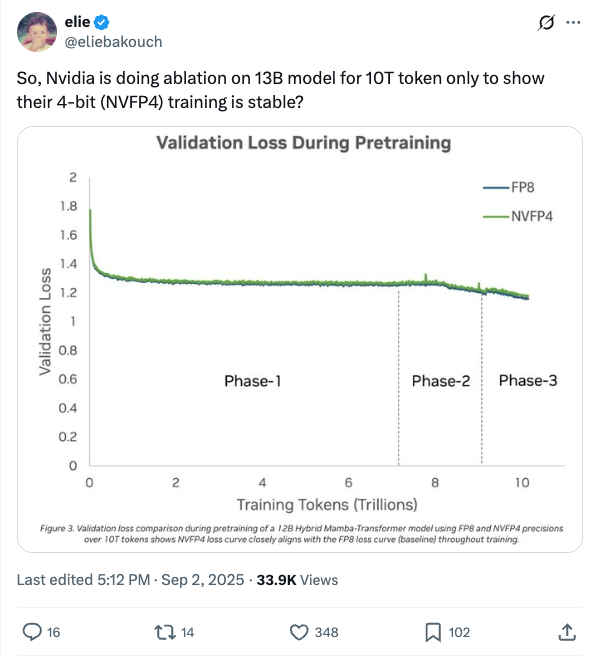
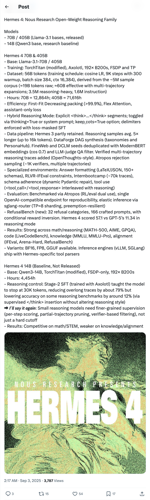
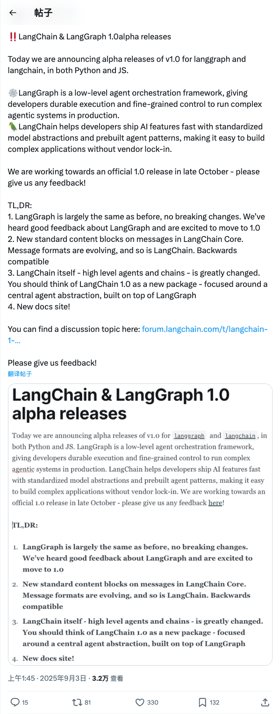
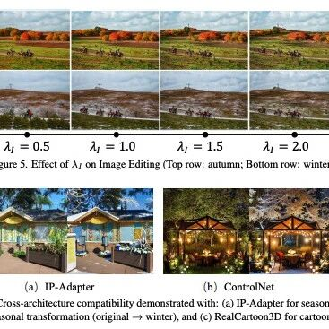
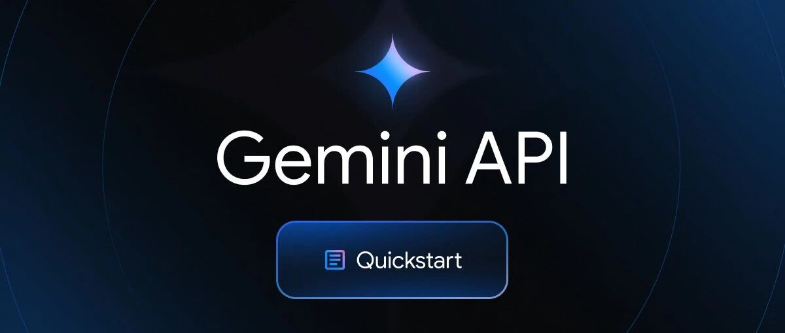
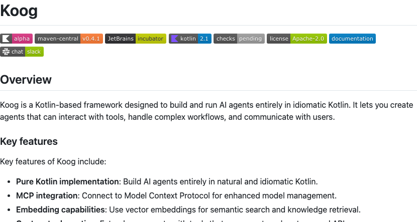
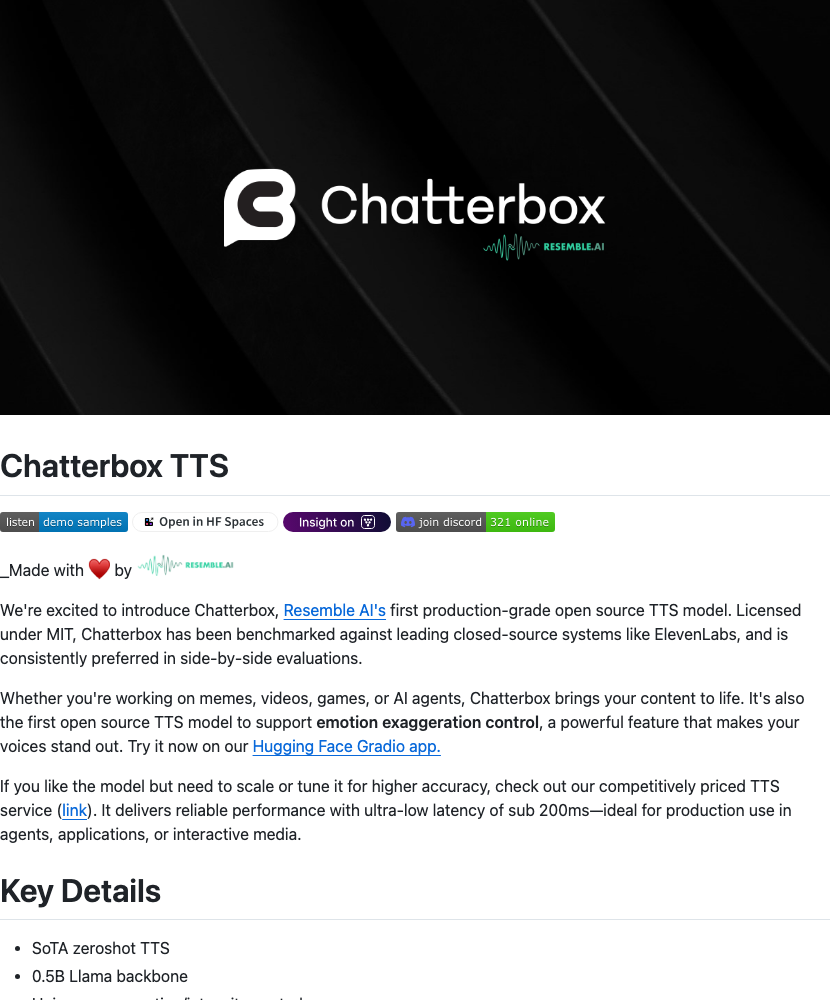

Twitter
emilygsands_Mistral AI Integrates Stripe MCP into Le Chat for Payment Data Handling
Published: 2025-09-02T14:23:11.000Z
Emily Glassberg Sands announced that Mistral AI's Le Chat now handles payment data, refunds, invoices, and subscriptions through its integration with Stripe's MCP. This collaboration significantly enhances Le Chat's connectivity and utility as an enterprise AI assistant, making it a more comprehensive AI solution. The update introduces over 20 connectors powered by MCP and fully controllable memory, positioning Le Chat as a highly relevant AI assistant for both enterprises and consumers.
corbtt_RL Recipe for Deep Research Agent Outperforms Sonnet-4 on H200 in 30 Hours
Published: 2025-09-02T19:02:31.000Z

Kyle Corbitt announced the release of a recipe for training a frontier-level deep research agent using Reinforcement Learning (RL). This method allows any developer, with just 30 hours on an H200 GPU and open-source tools, to surpass Sonnet-4's performance on the DeepResearch Bench. This represents a significant breakthrough in achieving high-performance AI agent training with minimal computational resources, potentially accelerating AI research and broader adoption.
eliebakouch_Nvidia 13B Model 4-bit Training Stability Validation
Published: 2025-09-02T09:12:59.000Z

The tweet highlights Nvidia's extensive ablation study on a 13-billion parameter model, trained with 10 trillion tokens, to demonstrate the stability of their 4-bit (NVFP4) training technology. This initiative suggests significant progress by Nvidia in low-precision model training, potentially reducing large model training costs and enhancing efficiency.
gm8xx8_Nous Research Releases Hermes 4 Open-Weight Reasoning Family Models
Published: 2025-09-02T18:17:54.000Z

Nous Research has released the Hermes 4 open-weight reasoning family models, including 70B and 405B versions based on Llama-3.1, and a 14B baseline model based on Qwen3. These models feature innovations in training, data pipeline, reasoning modes, and evaluation, notably introducing a hybrid reasoning mode and the RefusalBench benchmark. Hermes 4 demonstrates strong performance across math, reasoning, code, and knowledge domains, with its 70B version significantly outperforming GPT-5 on RefusalBench in reasoning mode.
LangChainAI_LangChain and LangGraph 1.0alpha Releases
Published: 2025-09-02T17:45:17.000Z

LangChainAI announced the alpha releases of LangChain and LangGraph v1.0 in both Python and JS. LangGraph serves as a low-level agent orchestration framework, offering durable execution and fine-grained control. LangChain aims to accelerate AI feature development with standardized model abstractions and prebuilt agent patterns. This update positions LangChain 1.0 as a new core agent abstraction package built on LangGraph. The official 1.0 release is targeted for late October, and feedback is encouraged.
DITOGAMESch_Multimodal AI Toolchain Test: Gemini, Kling, and Veo Collaborative Creation
Published: 2025-09-02T16:06:46.000Z
Travis Davids shared his creative workflow test involving a multimodal AI toolchain. The process integrates Gemini 2.5 Flash for image generation, utilizing the "Nano Banana" model and a collage method, then feeding these outputs to Kling 2.1 for start and end video frames. He highlighted Veo 3 as a favorite component of this combination. This test was conducted to explore the collaborative potential among various AI tools.
wechat
ICCV 2025 | Descriptive Instructions as Alternatives: Nanjing University and vivo Jointly Release DescriptiveEdit, Defining a New Paradigm for Semantic Image Editing
Published: 2025-09-02T14:01:10.000Z

Nanjing University and vivo have jointly unveiled DescriptiveEdit, a novel semantic image editing paradigm based on "descriptions." This method directly guides editing intentions through descriptive inputs, achieving high-quality global and local image modifications while striking an optimal balance between instruction adherence and structural fidelity. DescriptiveEdit incorporates an Attention Bridge for efficient reference image control and utilizes a zero-initialized linear layer for adaptive feature fusion, effectively resolving the conflict between precise editing and structural preservation. Furthermore, it seamlessly integrates with existing text-to-image ecosystem extensions like ControlNet and LoRA, demonstrating exceptional compatibility and editing performance. Experimental results confirm DescriptiveEdit's superior performance in both image consistency and instruction following compared to existing solutions, establishing an extensible, plug-and-play framework for semantic image editing.
Musk Releases "Master Plan Part 4": 80% of Tesla's Value Lies in Robots, and a New Car Was Accidentally Revealed
Published: 2025-09-02T04:13:51.000Z
Tesla's newly released "Master Plan Part 4" outlines the company's future strategic focus, with Elon Musk stating that approximately 80% of Tesla's value will derive from its Optimus humanoid robots. This blueprint signifies a profound paradigm shift for Tesla, moving beyond its initial focus on electric vehicles and sustainable energy towards a deep integration of artificial intelligence with the physical world. The overarching goal is to achieve "sustainable abundance" by unifying hardware and software on a massive scale. Part 4 emphasizes five core principles: infinite growth, innovation removing constraints, technology solving tangible problems, automation benefiting all humanity, and greater access driving greater growth. Crucially, it redefines cars as specialized wheeled robots for specific scenarios, indicating that Tesla's advanced FSD technology will be generalized and applied to humanoid robots like Optimus. The article also highlights the unexpected reveal of a new Cybertruck-like SUV, adding to the anticipation surrounding Tesla's evolving vision.
ByteDance Seed's New Attention Mechanism Reduces Computation by 85% for Long Video Generation at Short Video Cost
Published: 2025-09-02T04:13:51.000Z
ByteDance Seed, in collaboration with Stanford and other institutions, has introduced a novel sparse attention mechanism called Mixture of Contexts (MoC), designed to enable high-quality long video generation at the computational cost typically associated with short videos. This innovative mechanism redefines long video generation as a context retrieval task, leveraging efficient long-term memory retrieval to drastically reduce computational overhead. Experimental results demonstrate that MoC can cut the required computation for long video generation by up to 85%, while consistently maintaining character and scene coherence, as well as overall video quality. This breakthrough addresses the inefficiency of cross-temporal memory access in traditional methods, offering an efficient and economical solution for creating extended video content.
Tencent Open-sources Youtu-agent: A New AI Agent Framework Achieving SOTA Performance with Open-source Models, No Training or Charges Required
Published: 2025-09-02T04:13:51.000Z
Tencent Youtu Lab has officially open-sourced Youtu-agent, a new AI agent framework designed to address common challenges in agent development, such as high entry barriers, complex dependencies, and high costs. This framework operates entirely within the open-source ecosystem, eliminating the need for model training or reliance on proprietary APIs. Despite this, Youtu-agent achieves leading performance on various challenging benchmarks, approaching or even surpassing some paid solutions. Key highlights include its open-source friendliness, flexible architecture, automated agent generation, and concise, efficient design. The framework has demonstrated practical utility in real-world scenarios like file management, data analysis, academic research, and broad surveys. Its DITA principles and automated agent generation mechanism significantly lower the difficulty of agent customization, providing a robust open-source baseline and ready-to-use tool for researchers, application developers, and AI enthusiasts alike.
Your RAG System Has a Mathematical Bug: DeepMind First Proves Limited Recall Capability of Embedding Vector Retrieval
Published: 2025-09-02T11:35:23.000Z
A recent groundbreaking study by Google DeepMind mathematically demonstrates the inherent limitations of current mainstream single-vector embedding retrieval models. The paper posits that performance bottlenecks stem not from insufficient training, but from the fundamental paradigm of compressing complex relational information into fixed-dimension vectors. Utilizing the concept of "Sign Rank," the research proves that a fixed-dimensional vector space cannot represent arbitrarily complex query-document combinations, imposing a mathematical "ceiling" on models tackling high-complexity retrieval tasks. Experimental validations, including "free embeddings" and the LIMIT dataset, reveal that even state-of-the-art single-vector models fail to perfectly handle seemingly simple yet combinatorially complex tasks, while sparse retrieval (BM25) and multi-vector models exhibit superior performance. This implies that RAG systems relying solely on single-vector embeddings will face recall limitations, prompting the industry to re-evaluate hybrid retrieval and multi-vector architectures as future directions for building more robust AI systems.
AI Reads Webpages, This Time It's Different: Google Gemini Unlocks 'Detailed Webpage Understanding' Skill
Published: 2025-09-02T03:42:30.000Z

This article introduces Google Gemini API's new URL Context feature, enabling Gemini models to deeply access and process content from URLs, including webpages, PDFs, and images, with a limit of 34MB. Unlike traditional AI methods that often only read summaries from links, URL Context is a developer-centric API designed for comprehensive document parsing, understanding structure, content, and data. It supports deep PDF analysis, multimodal image comprehension, and various web file formats. Thomas Reid suggests it's a "nail in RAG's coffin" for public web content, as it streamlines processing by eliminating complex RAG steps like extraction, chunking, and vectorization. Despite limitations such as paywalls and capacity, URL Context signifies a broader industry trend where foundational models internalize external capabilities, offering developers more efficient and precise solutions. However, RAG remains crucial for private document handling and complex retrieval scenarios.
GitHub
Fast and Flexible Multi-Agent Automation Framework
Published: 2025-09-02T21:36:28Z

CrewAI is a lean, lightning-fast Python framework built for orchestrating autonomous AI agents, entirely independent of existing frameworks like LangChain. It offers two core mechanisms: Crews for multi-agent collaboration and Flows for event-driven workflows, balancing high-level simplicity with precise low-level control. CrewAI aims to transform complex business processes into efficient, intelligent automations, particularly suited for enterprise-grade applications, and is supported by an active community of over 100,000 certified developers.
Koog
Published: 2025-09-02T20:54:48Z

Koog is a cutting-edge, Kotlin-based framework specifically engineered for the development and execution of AI agents, leveraging the full power of idiomatic Kotlin. It provides a robust suite of functionalities crucial for modern AI applications, such as seamless integration with the Model Context Protocol (MCP), advanced embedding capabilities for semantic search, and flexible tools for extending agent functionalities. Key innovations include intelligent history compression for optimized token usage, a powerful Streaming API enabling real-time responses and parallel tool calls, and persistent agent memory for knowledge retention across sessions. Koog's scalable and modular architecture supports multiplatform deployment across JVM, JS, WasmJS, and iOS targets. It is compatible with leading LLM providers like Google, OpenAI, Anthropic, OpenRouter, and Ollama, making it an ideal choice for developers aiming to build sophisticated, interactive AI agents capable of managing complex workflows.
Bytebot: Open-Source AI Desktop Agent
Published: 2025-09-01T15:38:09Z

Bytebot is an open-source AI desktop agent that provides AI with a complete virtual desktop environment, enabling it to operate a computer like a human to accomplish complex tasks. It supports using any application, managing files, logging into websites, processing documents, and executing cross-program workflows. Key features include complete task autonomy, document processing, and interaction with real applications. Bytebot comprises a virtual desktop, an AI agent, a task interface, and APIs, supporting various AI models. It offers data privacy and high customization, making it suitable for business process automation, development and testing, and research and analysis scenarios.
🌟 500+ AI Agent Projects / UseCases
Published: 2025-08-01T11:52:42+00:00

This GitHub repository curates over 500 AI agent projects and use cases across various industries, showcasing the practical applications of AI agents in healthcare, finance, education, customer service, and more. It provides detailed use case descriptions and links to corresponding open-source projects, covering mainstream AI frameworks such as CrewAI, AutoGen, Agno, and Langgraph. This resource serves as a valuable hub for developers, researchers, and business enthusiasts seeking inspiration and knowledge in AI agent technology, fostering the widespread adoption and innovation of AI agent solutions.
Chatterbox TTS
Published: 2025-08-01T10:22:29Z

Chatterbox, Resemble AI's inaugural production-grade open-source Text-to-Speech (TTS) model, is released under an MIT license. This advanced model has demonstrated superior performance in side-by-side evaluations against prominent closed-source systems such as ElevenLabs. A groundbreaking feature is its unique emotion exaggeration control, allowing users to infuse voices with distinct expressiveness. Architected with a 0.5B Llama backbone and rigorously trained on 0.5 million hours of cleaned data, Chatterbox delivers state-of-the-art zeroshot TTS capabilities, ensuring ultra-stable and alignment-informed inference. Furthermore, it integrates built-in PerTh watermarking for responsible AI usage. Chatterbox is highly versatile, suitable for a wide array of applications including memes, videos, games, and AI agents, effectively bringing digital content to life with high-fidelity, controllable speech synthesis.
huggingface
PVPO: Pre-Estimated Value-Based Policy Optimization for Agentic
Reasoning
Published: 2025-08-28T09:18:26.000Z

Critic-free reinforcement learning methods, particularly group policies, have
attracted considerable attention for their efficiency in complex tasks.
However, these methods rely heavily on multiple sampling and comparisons within
the policy to estimate advantage, which may cause the policy to fall into local
optimum and increase computational cost. To address these issues, we propose
PVPO, an efficient reinforcement learning method enhanced by an advantage
reference anchor and data pre-sampling. Specifically, we use the reference
model to rollout in advance and employ the calculated reward score as a
reference anchor. Our approach effectively corrects the cumulative bias
introduced by intra-group comparisons and significantly reduces reliance on the
number of rollouts. Meanwhile, the reference model can assess sample difficulty
during data pre-sampling, enabling effective selection of high-gain data to
improve training efficiency. Experiments conducted on nine datasets across two
domains demonstrate that PVPO achieves State-Of-The-Art (SOTA) performance. Our
approach not only demonstrates robust generalization across multiple tasks, but
also exhibits scalable performance across models of varying scales.
T2R-bench: A Benchmark for Generating Article-Level Reports from Real
World Industrial Tables
Published: 2025-08-27T11:55:40.000Z

Extensive research has been conducted to explore the capabilities of large
language models (LLMs) in table reasoning. However, the essential task of
transforming tables information into reports remains a significant challenge
for industrial applications. This task is plagued by two critical issues: 1)
the complexity and diversity of tables lead to suboptimal reasoning outcomes;
and 2) existing table benchmarks lack the capacity to adequately assess the
practical application of this task. To fill this gap, we propose the
table-to-report task and construct a bilingual benchmark named T2R-bench, where
the key information flow from the tables to the reports for this task. The
benchmark comprises 457 industrial tables, all derived from real-world
scenarios and encompassing 19 industry domains as well as 4 types of industrial
tables. Furthermore, we propose an evaluation criteria to fairly measure the
quality of report generation. The experiments on 25 widely-used LLMs reveal
that even state-of-the-art models like Deepseek-R1 only achieves performance
with 62.71 overall score, indicating that LLMs still have room for improvement
on T2R-bench. Source code and data will be available after acceptance.
How Can Input Reformulation Improve Tool Usage Accuracy in a Complex
Dynamic Environment? A Study on τ-bench
Published: 2025-08-28T15:57:33.000Z

Recent advances in reasoning and planning capabilities of large language
models (LLMs) have enabled their potential as autonomous agents capable of tool
use in dynamic environments. However, in multi-turn conversational environments
like tau-bench, these agents often struggle with consistent reasoning,
adherence to domain-specific policies, and extracting correct information over
a long horizon of tool-calls and conversation. To capture and mitigate these
failures, we conduct a comprehensive manual analysis of the common errors
occurring in the conversation trajectories. We then experiment with
reformulations of inputs to the tool-calling agent for improvement in agent
decision making. Finally, we propose the Input-Reformulation Multi-Agent (IRMA)
framework, which automatically reformulates user queries augmented with
relevant domain rules and tool suggestions for the tool-calling agent to focus
on. The results show that IRMA significantly outperforms ReAct, Function
Calling, and Self-Reflection by 16.1%, 12.7%, and 19.1%, respectively, in
overall pass^5 scores. These findings highlight the superior reliability and
consistency of IRMA compared to other methods in dynamic environments.
UI-Level Evaluation of ALLaM 34B: Measuring an Arabic-Centric LLM via
HUMAIN Chat
Published: 2025-08-24T14:32:15.000Z

Large language models (LLMs) trained primarily on English corpora often
struggle to capture the linguistic and cultural nuances of Arabic. To address
this gap, the Saudi Data and AI Authority (SDAIA) introduced the ALLaM family
of Arabic-focused models. The most capable of these available to the public,
ALLaM-34B, was subsequently adopted by HUMAIN, who developed and deployed
HUMAIN Chat, a closed conversational web service built on this model. This
paper presents an expanded and refined UI-level evaluation of ALLaM-34B.
Using a prompt pack spanning modern standard Arabic, five regional dialects,
code-switching, factual knowledge, arithmetic and temporal reasoning, creative
generation, and adversarial safety, we collected 115 outputs (23 prompts times
5 runs) and scored each with three frontier LLM judges (GPT-5, Gemini 2.5 Pro,
Claude Sonnet-4). We compute category-level means with 95\% confidence
intervals, analyze score distributions, and visualize dialect-wise metric heat
maps. The updated analysis reveals consistently high performance on generation
and code-switching tasks (both averaging 4.92/5), alongside strong results in
MSA handling (4.74/5), solid reasoning ability (4.64/5), and improved dialect
fidelity (4.21/5). Safety-related prompts show stable, reliable performance of
(4.54/5). Taken together, these results position ALLaM-34B as a robust and
culturally grounded Arabic LLM, demonstrating both technical strength and
practical readiness for real-world deployment.
From reactive to cognitive: brain-inspired spatial intelligence for
embodied agents
Published: 2025-08-24T03:20:48.000Z

Spatial cognition enables adaptive goal-directed behavior by constructing
internal models of space. Robust biological systems consolidate spatial
knowledge into three interconnected forms: landmarks for salient cues,
route knowledge for movement trajectories, and survey
knowledge for map-like representations. While recent advances in multi-modal
large language models (MLLMs) have enabled visual-language reasoning in
embodied agents, these efforts lack structured spatial memory and instead
operate reactively, limiting their generalization and adaptability in complex
real-world environments. Here we present Brain-inspired Spatial Cognition for
Navigation (BSC-Nav), a unified framework for constructing and leveraging
structured spatial memory in embodied agents. BSC-Nav builds allocentric
cognitive maps from egocentric trajectories and contextual cues, and
dynamically retrieves spatial knowledge aligned with semantic goals. Integrated
with powerful MLLMs, BSC-Nav achieves state-of-the-art efficacy and efficiency
across diverse navigation tasks, demonstrates strong zero-shot generalization,
and supports versatile embodied behaviors in the real physical world, offering
a scalable and biologically grounded path toward general-purpose spatial
intelligence.
Democracy-in-Silico: Institutional Design as Alignment in AI-Governed
Polities
Published: 2025-08-27T04:44:41.000Z

This paper introduces Democracy-in-Silico, an agent-based simulation where
societies of advanced AI agents, imbued with complex psychological personas,
govern themselves under different institutional frameworks. We explore what it
means to be human in an age of AI by tasking Large Language Models (LLMs) to
embody agents with traumatic memories, hidden agendas, and psychological
triggers. These agents engage in deliberation, legislation, and elections under
various stressors, such as budget crises and resource scarcity. We present a
novel metric, the Power-Preservation Index (PPI), to quantify misaligned
behavior where agents prioritize their own power over public welfare. Our
findings demonstrate that institutional design, specifically the combination of
a Constitutional AI (CAI) charter and a mediated deliberation protocol, serves
as a potent alignment mechanism. These structures significantly reduce corrupt
power-seeking behavior, improve policy stability, and enhance citizen welfare
compared to less constrained democratic models. The simulation reveals that an
institutional design may offer a framework for aligning the complex, emergent
behaviors of future artificial agent societies, forcing us to reconsider what
human rituals and responsibilities are essential in an age of shared authorship
with non-human entities.